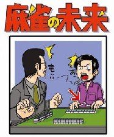
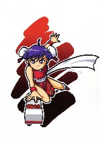

’０６．５／５、「麻雀の未来」という同人誌が刊行された。
 
右側は裏表紙であるが、σ(-_-)はこっちの絵も好き。(^-^)
目次は次の通り。
・麻雀マンガ三十年史（前編） izumick
・この麻雀マンガは読んどけ！20冊 izumick
・片山まさゆきの世界
・麻雀学事始 浅見了
・麻雀の樹 予告篇 ぴゅー太郎
・麻雀は博打かゲームか 福地誠
・麻雀はギャンブルゲームではない 草場純
・麻雀プロ業界とメディアの現状 overdrive
・千式麻雀の誕生 ヒロタシ
・ある奇人の疑心 ハンバート
・「東京マージャンMagazine」と愉快な仲間たち塔四郎
・麻雀で喰うには？ その体験的考察 福地誠
・編集後記 いたる
・表紙イラスト よしたにさま ゴトウさま
いままで麻雀商業誌はかずかず刊行されているが、同人誌の刊行は史上初めて。それだけでも画期的なできごとであるが、コンテンツもすばらしい。体裁も本格的なオフセット印刷でおどろいた。
いちおうσ(-_-)も「麻雀学事始」を寄稿しているが、これは日本における麻雀学の黎明期を俯瞰したモノではない。単なるσ(-_-)の麻雀研究の半自叙伝のようなもの。ターヘルアナトミアの翻訳書が「解体新書」、その翻訳の苦労話が“蘭学事始”。「麻雀学事始」は、その“蘭学事始”と同様の主旨。そこで他人の苦労話なんか興味がない人にとっては、まことにどうでもいい内容。(_
_； しかし他のコンテンツは、まことにすばらしい。
izumick さんの「麻雀マンガ三十年史（前編）」は本邦初のマンガ史総覧。「片山まさゆきの世界」は、麻雀マンガの巨人、片山まさゆき作品の全解剖。ぴゅー太郎さんの「麻雀の樹予告篇」には、（早く本編が読みたい）との思いが募る好編。
福地誠さんの「麻雀は博打かゲームか」は小品ながら読ませる。同じく福地さんの「麻雀で喰うには？ その体験的考察」は、タイトル通り、麻雀とギャンブルとの体験的考察。
overdriveさんの「麻雀プロ業界とメディアの現状」は、タイトルの名に恥じない内容。特にブログやSNSなど、麻雀プロのメディアに対する取り組み方の指摘は鋭い。ヒロタシさんの「千式麻雀の誕生」は、千式麻雀の勝敗評価法が純麻雀と同じである事もあって、興味深く読ませてもらった。
ハンバートさんの「ある奇人の疑心」は、世に言うオカルトvsデジタル打法に対する自分の心の変遷をコラムったもの。＃よろしかったら、σ(-_-)が開発した究極の打法、“行き当たりばったり打法”の仲間に入らないか....(^-^；
塔四郎さんの「“東京マージャンMagazine”と愉快な仲間たち」は、氏の発行していた“東京マージャンMagazine”のエピソード裏話。
全体で100ページ足らずの小冊子ながら どのコラムも読み応えがあり、本邦初の麻雀同人誌という域を超えたデキであることが喜ばしい。
|